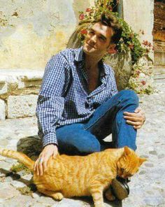

Morrissey

| Birth Name: |
Steven Patrick Morrissey |
| Born: |
22 May 1959 (age 62) |
| Origin: |
Davyhulme, Lancashire, England |
| Occupation: |
Singer, songwriter |
| Instruments: |
Vocals |
| Years Active: |
1978–present |
| Labels: |
HMV, Parlophone, Sire, Reprise, RCA, Attack, Decca, Lost Highway, Polydor, Harvest, Capitol, BMG |
| Associated Acts: |
The Smiths |
Steven Patrick Morrissey (born 22 May 1959), known mononymously as Morrissey, is an English singer and songwriter. He came to prominence as the frontman
and lyricist of rock band the Smiths, who were active from 1982 to 1987. Since then, he has pursued a successful solo career. Morrissey's music is
characterised by his baritone voice and distinctive lyrics with recurring themes of emotional isolation, sexual longing, self-deprecating and dark humour,
and anti-establishment stances.
Morrissey was born to working-class Irish immigrants in Davyhulme, Lancashire, England; the family lived in Queen's Court near the Loreto convent in
Hulme and his mother worked nearby at the Hulme Hippodrome bingo hall. They moved due to the 1960s demolitions of almost all the Victorian-era houses in
Hulme, known as 'slum clearance', and he grew up in nearby Stretford. As a child, he developed a love of literature, kitchen sink realism, and 1960s
pop music. In the late 1970s, he fronted the punk rock band the Nosebleeds with little success before beginning a career in music journalism and writing
several books on music and film in the early 1980s. (Morrissey later said, in 2024, that he "did not ever join" the Nosebleeds.) He formed the Smiths
with Johnny Marr in 1982 and the band soon attracted national recognition for their eponymous debut album. As the band's frontman, Morrissey attracted
attention for his trademark quiff and witty and sardonic lyrics. Deliberately avoiding rock machismo, he cultivated the image of a sexually ambiguous
social outsider who embraced celibacy. The Smiths released three further studio albums—Meat Is Murder, The Queen Is Dead, and Strangeways,
Here We Come—and had a string of hit singles. The band were critically acclaimed and attracted a cult following. Personal differences between
Morrissey and Marr resulted in the separation of the Smiths in 1987.
In 1988, Morrissey launched his solo career with Viva Hate. This album and its follow-ups—Kill Uncle (1991), Your Arsenal (1992), and Vauxhall and I
(1994)—all did well on the UK Albums Chart and spawned multiple hit singles. He took on Alain Whyte and Boz Boorer as his main co-writers to replace Marr.
During this time his image began to shift into that of a more robust figure who toyed with patriotic imagery and working-class masculinity. In the
mid-to-late 1990s, his albums Southpaw Grammar (1995) and Maladjusted (1997) also charted but were less well received. Relocating to Los Angeles, he
took a musical hiatus from 1998 to 2003 before releasing a successful comeback album, You Are the Quarry, in 2004. Ensuing years saw the release of
albums Ringleader of the Tormentors (2006), Years of Refusal (2009), World Peace Is None of Your Business (2014), Low in High School (2017), California
Son (2019), and I Am Not a Dog on a Chain (2020), as well as his autobiography and his debut novel, List of the Lost (2015).
Highly influential, Morrissey has been credited as a seminal figure in the emergence of indie pop, indie rock, and Britpop. In a 2006 poll for the BBC's
Culture Show, Morrissey was voted the second-greatest living British cultural icon. His work has been the subject of academic study.
He has been a controversial figure throughout his music career due to his forthright opinions and outspoken nature, endorsing vegetarianism and
animal rights and criticising royalty and prominent politicians. He has also supported far-right activism with regard to British heritage, and
defended a particular vision of national identity while critiquing the effects of immigration on the UK.